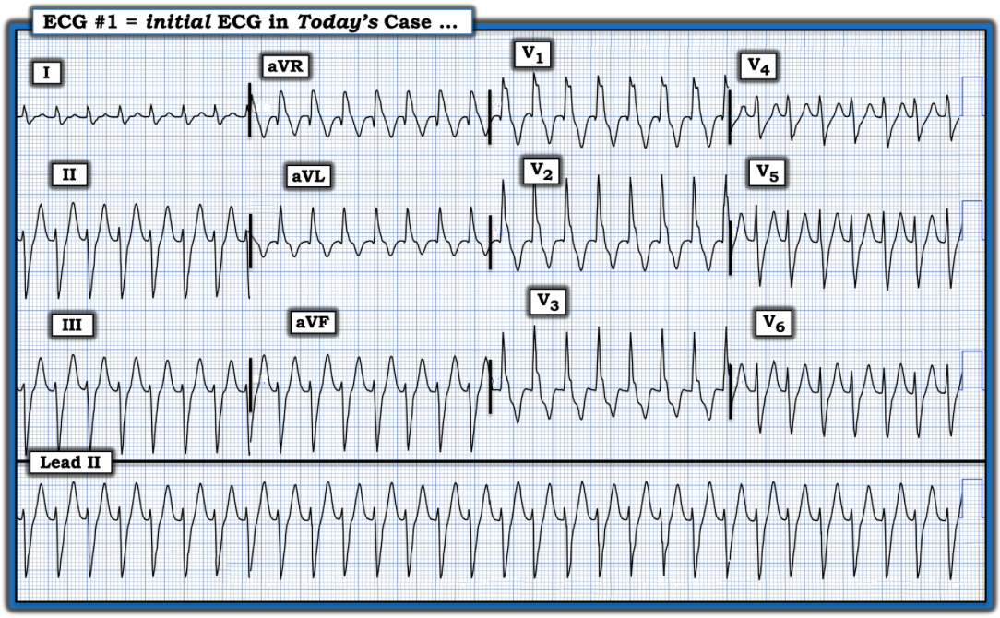
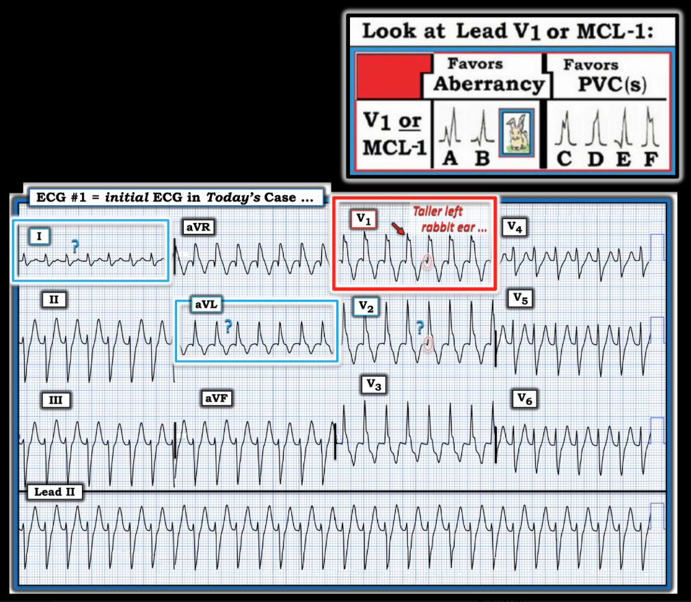
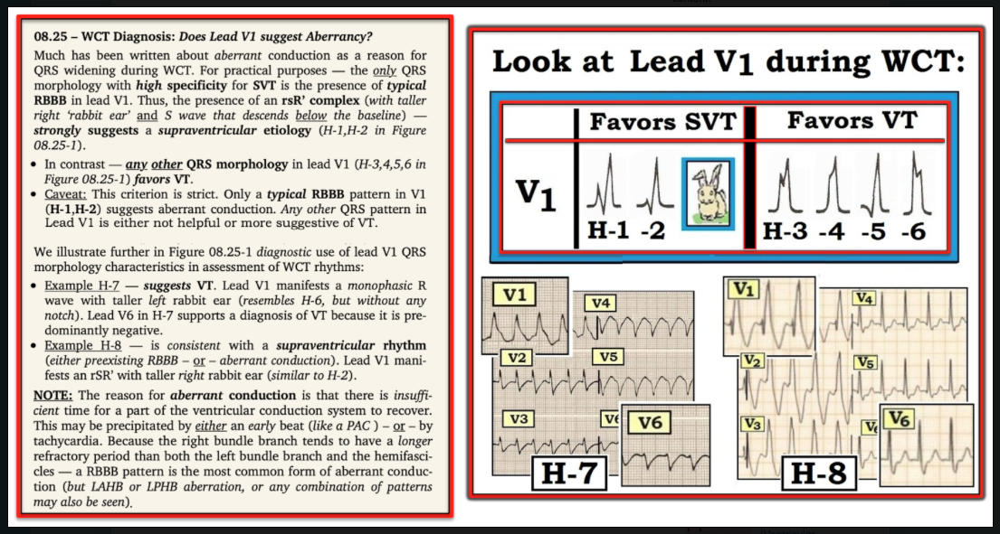
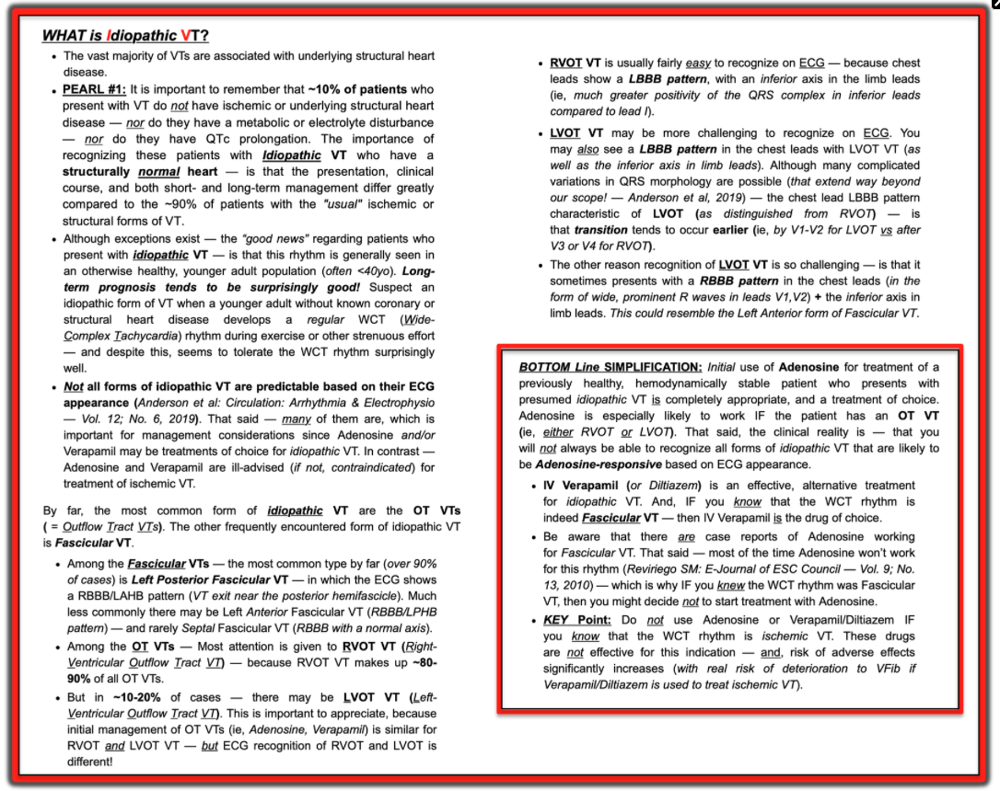

ECG Blog #489 — Nhịp nhanh QRS rộng ở một bệnh nhân 20 tuổi
Điện tâm đồ ở Hình-1 — được ghi từ một phụ nữ khoảng 20 tuổi, trước đây khỏe mạnh, bị hồi hộp đánh trống ngực. Chị kể đã có một số cơn tương tự trước đó. “Tin tốt” — là chị ổn định huyết động tại khoa cấp cứu (Emergency Department) vào thời điểm ghi điện tâm đồ #1.
CÂU HỎI:
- Bạn diễn giải điện tâm đồ ở Hình-1 như thế nào?
- Bạn chắc chắn đến mức nào về chẩn đoán của mình?
- Việc bệnh nhân này ổn định huyết động vào thời điểm ghi điện tâm đồ có ảnh hưởng đến chẩn đoán của bạn không?
- Bạn sẽ điều trị bệnh nhân này như thế nào?
==================================
LƯU Ý: Bạn có thể bỏ qua để xuống thẳng phần TRẢ LỜI bên dưới — hoặc cùng tôi đi qua cách tiếp cận tuần tự trong phần Suy nghĩ của tôi về CA hôm nay:
==================================


Suy nghĩ của tôi về CA hôm nay:
Áp dụng Ps, Qs và 3Rs (Xem ECG Blog #185) — nhịp ở Hình-1 nhanh (~180 lần/phút) — đều — với QRS rộng — và không có dấu hiệu rõ ràng của hoạt động nhĩ. Điều này xác định nhịp là một WCT đều (nhịp nhanh QRS rộng — Wide-Complex Tachycardia). Theo các ĐƯỜNG LINK tới các ca khác ở cuối trang này — chẩn đoán phân biệt chủ yếu là giữa:
- VT (nhịp nhanh thất — Ventricular Tachycardia) — hoặc —
- SVT (nhịp nhanh trên thất — SupraVentricular Tachycardia) kèm một trong hai điều sau: i) BBB có sẵn từ trước (blốc nhánh — Bundle Branch Block); hoặc ii) Dẫn truyền lệch hướng do tần số nhanh.
Trong những trường hợp hiếm — "một nguyên nhân khác" (tức là tăng kali máu, ngộ độc thuốc chẹn kênh natri — hoặc ngộ độc khác) có thể gây ra một nhịp WCT đều. Dù vậy — ở một người trẻ tuổi trước đây khỏe mạnh (như trong ca hôm nay) — vấn đề chính cần cân nhắc là phân biệt giữa VT với SVT kèm BBB có sẵn từ trước hoặc dẫn truyền lệch hướng liên quan tần số.
Những điểm CHÍNH cần cân nhắc gồm:
- Về mặt thống kê, trong một quần thể người lớn không chọn lọc — ít nhất 80% các nhịp WCT đều không có dấu hiệu hoạt động nhĩ rốt cuộc sẽ là VT. Khả năng VT tăng lên ~90% nếu bệnh nhân là người lớn tuổi có bệnh tim nền.
- Các số liệu thống kê này thực sự khác đi khi bệnh nhân là người trẻ tuổi không có bệnh tim nền. Điều quan trọng là cần hiểu rằng VT vô căn ở quần thể này thường gặp hơn nhiều so với suy nghĩ của nhiều nhân viên y tế — mặc dù tỷ lệ những bệnh nhân như vậy đến viện với một WCT đều rốt cuộc là VT sẽ thấp hơn mức 80% gặp ở người lớn tuổi (Xem Hình-4 và PEARL Audio trong PHẦN BỔ SUNG bên dưới để biết thêm về VT vô căn).
- Hình thái QRS có thể giúp dự đoán nguyên nhân WCT chính xác hơn — đặc biệt NẾU có các đặc điểm điện tâm đồ gợi ý VT hoặc SVT. Dù vậy, ngay cả trong những ca mà hình thái QRS có tính gợi ý — hiếm khi đạt được độ chắc chắn 100% trước khi chúng ta cần bắt đầu điều trị.
- ĐIỂM THEN CHỐT (PEARL) #1: Phần lớn (hầu hết) thời gian — chúng ta sẽ phải bắt đầu điều trị trước khi chắc chắn về chẩn đoán. Hãy nhớ rằng nếu vào bất kỳ lúc nào trong quá trình đó, bệnh nhân có dấu hiệu trở nên mất ổn định huyết động — thì có chỉ định sốc điện chuyển nhịp đồng bộ ngay lập tức. Dù vậy, khi chưa chắc chắn về chẩn đoán — điều trị theo kinh nghiệm dựa trên chẩn đoán phỏng đoán tốt nhất của chúng ta là hợp lý.
- ĐIỂM THEN CHỐT (PEARL) #2: Có một số đặc điểm điện tâm đồ có thể cho phép chẩn đoán với độ chắc chắn gần 100%. Chúng gồm phân ly nhĩ thất, nhát bắt được và nhát hỗn hợp. Dù vậy — các đặc điểm điện tâm đồ có tính xác định này hiếm khi xuất hiện ở các nhịp WCT nhanh hơn, vốn là những nhịp khó đánh giá nhất (Mặc dù tôi luôn tìm các đặc điểm điện tâm đồ có tính xác định này — nhưng khó có khả năng chúng ta sẽ tìm thấy chúng trong WCT đều hôm nay ở tần số 180 lần/phút). Việc không thấy phân ly nhĩ thất, nhát bắt được hay nhát hỗn hợp không giúp ích cho chẩn đoán nếu không thấy dấu hiệu nào trong số này (Các dấu hiệu điện tâm đồ này chỉ có ích khi hiện diện).
- ĐIỂM THEN CHỐT (PEARL) #3: Đôi khi — Việc có sẵn một điện tâm đồ trước đó có thể vô cùng quý giá để loại trừ VT, bằng cách cho thấy hình thái QRS trong nhịp xoang giống hệt hình thái đã thấy trong nhịp WCT. Đáng tiếc — hiếm khi có sẵn ngay một điện tâm đồ trước đó vào lúc bạn đang xử trí bệnh nhân WCT trước mặt.
- ĐIỂM THEN CHỐT (PEARL) #4: Ổn định huyết động trong nhịp WCT không loại trừ VT. Mặc dù đúng là bệnh nhân bị VT bền bỉ có khả năng mất bù cao hơn nhiều so với những người vẫn ở trong nhịp SVT dai dẳng — những nhận định chung này không phải lúc nào cũng đúng. Một số bệnh nhân bị VT bền bỉ vẫn ổn định huyết động trong nhiều giờ — hoặc thậm chí lâu hơn (đã có ghi nhận một số ca VT bền bỉ kéo dài tới nhiều ngày — trong khi các nhân viên y tế quanh giường bệnh không chịu tin rằng điều đó có thể xảy ra). Vì vậy — không thể dùng sự ổn định huyết động để loại trừ VT.
Còn CA hôm nay thì sao?
Như đã nêu — bệnh nhân hôm nay là một người trẻ tuổi trước đây khỏe mạnh, có tiền sử "hồi hộp đánh trống ngực" — đến khoa cấp cứu trong tình trạng ổn định huyết động với một nhịp WCT đều tần số 180 lần/phút.
- Với tuổi trẻ và tình trạng trước đây khỏe mạnh của bệnh nhân này — VT do thiếu máu cục bộ rất khó xảy ra. Nhưng bệnh nhân này có thể bị VT vô căn = thể VT gặp ở ~10% các ca VT, trong đó VT xảy ra không có bất kỳ bệnh tim nền nào (Xem Hình-4 trong Phần bổ sung bên dưới).
- Như đã ghi nhận ở trên — không thấy phân ly nhĩ thất, nhát bắt được và nhát hỗn hợp (tức là không có dấu hiệu hoạt động nhĩ, nên không có phân ly nhĩ thất — và — không có "chỗ ngắt" trong nhịp, nên không có nhát bắt được hay nhát hỗn hợp).
- ĐIỂM THEN CHỐT (PEARL) #5: Dẫn truyền lệch hướng thường biểu hiện nhất dưới dạng QRS giãn rộng liên quan tần số với hình thái QRS giống một dạng rối loạn dẫn truyền đã biết nào đó (tức là RBBB, LBBB, LAHB, LPHB, hoặc RBBB kèm một blốc phân nhánh). Đó là vì thời kỳ trơ của các phân nhánh dẫn truyền khác nhau không giống nhau. Ở hầu hết bệnh nhân — thời kỳ trơ của nhánh phải có xu hướng dài nhất, đó là lý do dẫn truyền kiểu RBBB là dạng dẫn truyền lệch hướng liên quan tần số thường gặp nhất. Nhưng bất kỳ kiểu dẫn truyền nào cũng có thể xảy ra với dẫn truyền lệch hướng liên quan tần số (Xem ECG Blog #211 — để biết thêm về lý do TẠI SAO có dẫn truyền lệch hướng).
- ĐIỂM THEN CHỐT (PEARL) #6: Như đã bàn ở Hình-4 — VT phân nhánh (fascicular VT) là một trong những dạng VT vô căn thường gặp nhất. Do khởi phát gần phân nhánh trái trước hoặc phân nhánh trái sau — hình thái QRS trong VT phân nhánh giống dẫn truyền kiểu RBBB/LAHB hoặc RBBB/LPHB. Dù vậy — manh mối tôi ưa thích nhất cho thấy một nhịp WCT có thể rốt cuộc là VT phân nhánh — là có một số đặc điểm điện tâm đồ không điển hình của dẫn truyền kiểu RBBB!
Hình thái QRS lệch hướng ở chuyển đạo V1:
Mặc dù có ngoại lệ — người ta sẽ mong đợi dẫn truyền lệch hướng kiểu RBBB liên quan tần số biểu hiện hình thái QRS điển hình, vì bệnh nhân hôm nay là một người trẻ tuổi ngoài ra khỏe mạnh. Ngược lại — dẫn truyền lệch hướng kiểu RBBB ở người lớn tuổi có bệnh tim nền sẽ dễ biểu hiện hình thái QRS kém điển hình hơn (tức là "sẹo" do bệnh tim thiếu máu cục bộ và/hoặc bệnh cơ tim dễ làm thay đổi hình thái QRS hơn).
- Như trình bày ở ô chèn góc trên bên phải trong Hình-2 (và như được bàn chi tiết hơn ở Hình-3 trong Phần bổ sung bên dưới) — dẫn truyền kiểu RBBB điển hình biểu hiện một kiểu hình đặc trưng ở 3 chuyển đạo MẤU CHỐT mà tôi dựa vào để nhận biết các blốc nhánh (Xem ECG Blog #204 — về cách tiếp cận dễ dùng của tôi để chẩn đoán BBB và IVCD trong vòng vài giây!).
- Với dẫn truyền kiểu RBBB điển hình — có một phức bộ rsR' ba pha rõ rệt ở chuyển đạo bên phải V1 (với "tai thỏ" phải cao hơn — và sóng S đi xuống dưới đường đẳng điện — phù hợp với A hoặc B ở Hình-2).
- Đặc điểm đặc trưng còn lại của dẫn truyền kiểu RBBB — là sự hiện diện của sóng S tận rộng ở các chuyển đạo bên trái I và V6.
- ĐIỂM THEN CHỐT (PEARL) #7: Trên thực hành — hình thái QRS duy nhất có độ đặc hiệu cao cho SVT là sự hiện diện của hình thái mô tả ở trên (như thể hiện ở A hoặc B trong Hình-2). Mặc dù có ngoại lệ — bất kỳ hình thái QRS nào khác (tức là C,D,E,F trong Hình-2) đều nghiêng về VT.


==================================
TRẢ LỜI: Áp dụng hình thái QRS vào CA hôm nay:
Tôi lập tức nghĩ rằng điện tâm đồ #1 trong ca hôm nay nhiều khả năng nhất là VT phân nhánh trái sau.
- Mặc dù phức bộ giãn rộng, chủ yếu dương ở chuyển đạo V1 giống dẫn truyền kiểu RBBB — hình thái QRS ở chuyển đạo V1 rõ ràng không điển hình hơn mức tôi mong đợi đối với dẫn truyền kiểu RBBB ở một người trẻ tuổi ngoài ra khỏe mạnh. Đó là vì thay vì QRS ba pha như mong đợi ở chuyển đạo V1 — chúng ta thấy một sóng q khởi đầu cùng sóng R ưu thế bị trát đậm, biểu hiện "tai thỏ" trái cao hơn (giống nhất với kiểu F trong ô chèn ở Hình-2).
- Một kiểu qR tương tự thấy ở chuyển đạo V2 — đến mức chúng ta không hề thấy kiểu ba pha nào.
- Sóng S tận rộng có thấy ở các chuyển đạo bên trái I và V6 — nhưng QRS ở chuyển đạo bên trái thứ 3 là chuyển đạo aVL trông rất khác QRS ở chuyển đạo I, và hoàn toàn không có sóng S tận. Ngoài ra — hình thái QRS ở các chuyển đạo dưới hoàn toàn phù hợp với dẫn truyền kiểu LAHB.
ĐIỀU CỐT LÕI:
Chủ yếu dựa trên hình thái QRS rất không điển hình ở chuyển đạo V1 ở người trẻ tuổi ngoài ra khỏe mạnh này — tôi cho rằng hình thái QRS phù hợp nhất với VT phân nhánh.
- ĐIỂM THEN CHỐT (PEARL) #8: Như đã bàn ở Hình-4 — Verapamil tĩnh mạch là điều trị được lựa chọn cho VT phân nhánh. "Cái hay" của việc dùng Verapamil tĩnh mạch cho chỉ định này — là thuốc này cũng hiệu quả trong điều trị đại đa số các nhịp SVT vào lại, do đó dùng Verapamil tĩnh mạch để điều trị nhịp WCT hôm nay có rất ít bất lợi.
- LƯU Ý: Điều cần thận trọng khi dùng Verapamil tĩnh mạch hoặc Diltiazem tĩnh mạch để điều trị một nhịp WCT đều — là nếu nhịp đó rốt cuộc là VT do thiếu máu cục bộ, thì tác dụng giãn mạch và giảm co bóp cơ tim của các thuốc này có thể làm VT do thiếu máu cục bộ chuyển thành rung thất (VFib). Dù vậy — người trẻ tuổi trước đây khỏe mạnh trong ca hôm nay rất khó bị VT do thiếu máu cục bộ.
==================================
DIỄN TIẾN CỦA CA BỆNH.
- Bệnh nhân trong ca hôm nay ban đầu được điều trị bằng Adenosine tĩnh mạch. Việc này không thành công.
- Sau đó dùng thử Verapamil tĩnh mạch — và đã chuyển thành công WCT về nhịp xoang.
- Bệnh nhân được chuyển tới chuyên khoa Điện sinh lý tim (EP) để cân nhắc triệt đốt VT phân nhánh tái phát.
==================================
Lời cảm ơn: Xin cảm ơn Insanuddin Ihsan (Kabul, Afghanistan) đã cho phép tôi sử dụng ca bệnh này và các bản ghi này.
==================================

==============================
PHẦN BỔ SUNG (26/7/2025):
- Ở Hình-3 — tôi ôn lại hình thái QRS ở chuyển đạo V1 gợi ý dẫn truyền lệch hướng.
- Ở Hình-4 — tôi tóm tắt các đặc điểm CHÍNH về VT vô căn.





ECG Media PEARL #14 (8 phút Audio) hôm nay — VT vô căn là gì? — TẠI SAO chúng ta cần quan tâm? Đặc biệt chú ý tới 2 thể thường gặp nhất = VT đường ra thất phải — RVOT (Right Ventricular Outflow Track) VT và VT phân nhánh.
==============================
Các bài ECG Blog liên quan khác đến ca hôm nay:
- ECG Blog #185 — Ôn lại Hệ thống Đọc nhịp của tôi, dùng Cách tiếp cận Ps, Qs & 3R.
- ECG Blog #210 — Ôn lại phương pháp Cách-Một-Nhát (hoặc Cứ-Mỗi-Ba-Nhát) để ước tính tần số tim nhanh — và bàn về một ca khác có nhịp WCT đều.
- ECG Blog #220 — Ôn lại cách tiếp cận WCT đều (nhịp nhanh QRS rộng — Wide-Complex Tachycardia).
- ECG Blog #196 — Ôn lại một WCT đều khác.
- ECG Blog #263 và Blog #283 — Blog #361 — Blog #384 — và Blog #460 — và Blog #468 — Thêm các nhịp WCT ...
- ECG Blog #197 — Ôn lại khái niệm VT vô căn, trong đó VT phân nhánh là một trong 2 thể thường gặp nhất.
- ECG Blog #346 — Ôn lại một ca VT đường ra thất trái (LVOT VT) (một thể VT vô căn ít gặp hơn).
- ECG Blog #204 — Ôn lại chẩn đoán điện tâm đồ các blốc nhánh (RBBB/LBBB/IVCD).
- ECG Blog #203 — Ôn lại chẩn đoán điện tâm đồ về trục và các blốc phân nhánh. Để ôn lại hình thái QRS trong các blốc hai phân nhánh (RBBB/LAHB; RBBB/LPHB) — Xem Pearl Video trong bài blog này.
- ECG Blog #211 — TẠI SAO xảy ra dẫn truyền lệch hướng?
- ECG Blog #301 — Ôn lại một WCT có nguồn gốc trên thất! (với RẤT NHIỀU nội dung về dẫn truyền lệch hướng).
- ECG Blog #445 và Blog #361 — thêm các WCT đều.
- ECG Blog #475 — SVT dẫn truyền lệch hướng?
- ECG Blog #323 — Ôn lại VT phân nhánh.
- ECG Blog #38 và Blog #85 — Ôn lại VT phân nhánh.
- ECG Blog #278 — Một ca khác có nhịp WCT đều ở một người trẻ tuổi.
- ECG Blog #35 — Ôn lại VT đường ra thất phải (RVOT).
- ECG Blog #42 — Tiêu chuẩn phân biệt VT với dẫn truyền lệch hướng.
- ECG Blog #133 và ECG Blog #151— các ví dụ trong đó phân ly nhĩ thất khẳng định chẩn đoán VT.
- Phân tích một ca nhịp WCT đều ở một phụ nữ ngoài 80 tuổi — Xem Bình luận của tôi trong bài đăng ngày 5 tháng 5 năm 2020 trên Dr. Smith’s ECG Blog.
- Một ca khác có nhịp WCT đều ở một phụ nữ ngoài 60 tuổi — Xem Bình luận của tôi ở cuối trang trong bài đăng ngày 15 tháng 4 năm 2020 trên Dr. Smith’s ECG Blog.
- Một loạt 3 bản ghi khó có QRS giãn rộng (Xem Bình luận của tôi ở cuối trang trong bài đăng ngày 6 tháng 3 năm 2025 trên Dr. Smith's ECG Blog).
- Ôn lại các VT vô căn (tức là VT phân nhánh; VT đường ra thất phải (RVOT) và đường ra thất trái (LVOT)) — Xem Bình luận của tôi ở cuối trang trong bài đăng ngày 7 tháng 9 năm 2020 trên Dr. Smith’s ECG Blog.
- Ôn lại một loại VT khác (VT đa hình thái — Pleomorphic VT) — Xem Bình luận của tôi trong bài đăng ngày 1 tháng 6 năm 2020 trên Dr. Smith’s ECG Blog.